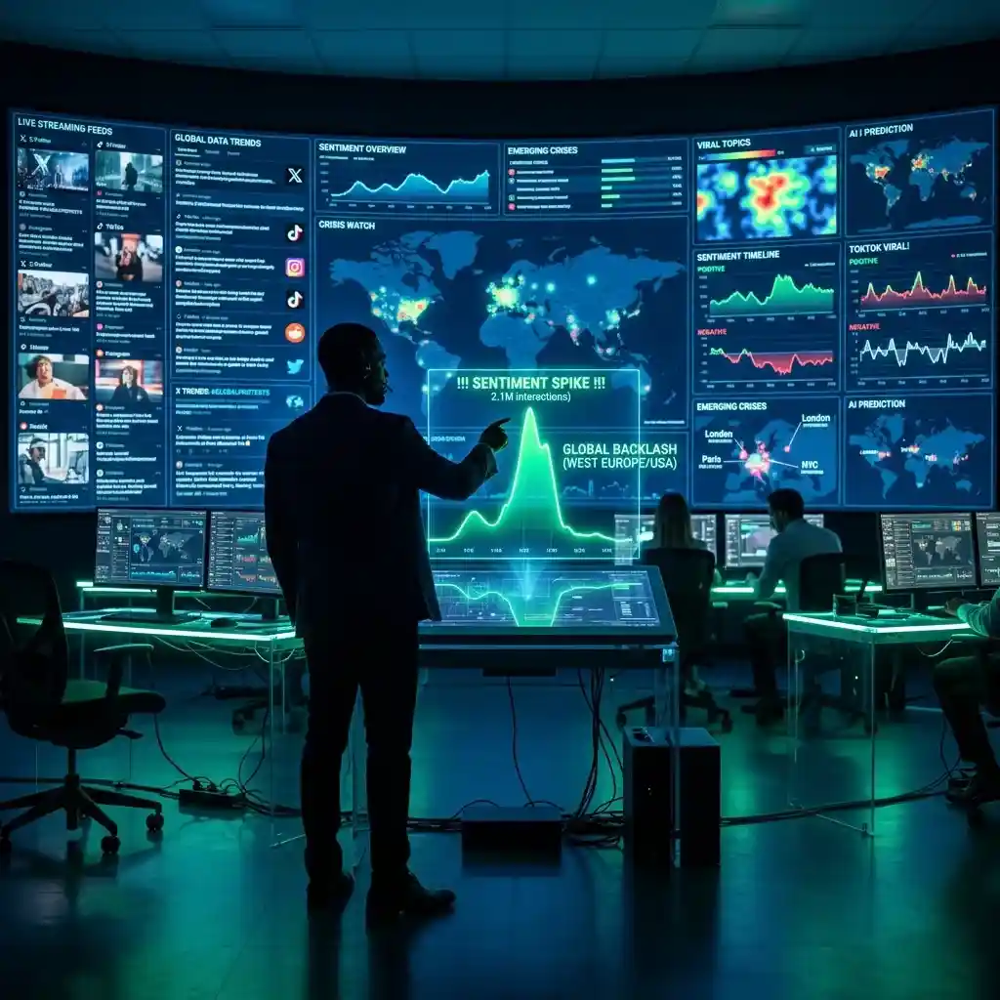

Real-Time Social Media Monitoring for Brands: A Competitive Edge

In today's fast-paced digital landscape, Digital Situational Awareness (DSA) is no longer a luxury for intelligence agencies—it is a core survival skill for every modern professional.
Whether you are a market analyst tracking a sudden crypto-liquidations, a journalist covering a geopolitical crisis in Europe, or a corporate strategist monitoring a viral brand scandal, your ability to witness events as they breathe is your ultimate competitive edge. The "Information Lag"—the delay between a real-world event and its appearance in a curated news feed—is a zone of extreme risk and opportunity. To navigate this effectively, you must move beyond the "passive consumption" of social media and into the realm of "Active Monitoring." This guide explores the principles of real-time monitoring and examines how you can build a high-velocity surveillance grid that achieves efficient multitasking. Success today is about the speed of your truth-verification.
The Velocity of the Feed: Tracking Viral Inflection Points
The 2026 digital ecosystem is defined by "High-Velocity Spikes." A viral topic can transition from a niche community discussion to a global mainstream headline in a matter of minutes. These "Viral Inflection Points"—the exact moments when a story gains critical mass—are the most important data signals for any monitor. Traditional news broadcasts often miss these early signals because they are waiting for official verification. As a real-time monitor, your goal is to be in the "Pre-Viral" zone, watching the raw signals as they are first being discussed on platforms like X, Reddit, and Discord.
To track these inflection points effectively, you must monitor "Sentiment Change" and "Volume Acceleration." When you see a sudden, uncharacteristic spike in discussions about a specific ticker symbol, a geopolitical region (like Poland), or a technical hardware release (like a 20-screen multiscreen setup), you have identified a potential trend. The key is to have your monitoring dashboard ready to cross-reference these signals immediately. By being a "First Responder" to digital data shifts, you position yourself to make informed decisions before the broader market or the general public settles on a single narrative. Real-time monitoring is about catching the "Whisper" before it becomes a "Roar."
Sentiment Analysis at Scale: Distinguishing Noise from Narrative
One of the biggest challenges of high-velocity monitoring is the "Noise." For every piece of genuine "Alpha" (future-predicting information), there are thousands of "Shitposts," bot-generated hype, and general misinformation items. To be an effective monitor, you must develop the skill of "Sentiment Filtering." This means not just seeing *that* people are talking, but understanding *why* they are talking and *who* is leading the conversation. The influence of a "High-Authority Creator" on YouTube or a "Trusted Community Leader" on X is far more significant than ten thousand anonymous bot accounts.
A multi-stream intelligence setup allowing you to monitor these individual "Authority Layers" in real-time is an essential tool. Use one tile for a live "sentiment heat-map" across major platforms, another for the latest posts from influential "narrative shapers" in your niche, and a third for a live YouTube discussion from a technical specialist who focusing on reality-verification. This "Authority Triangulation" provides a level of context that single-feed research simply cannot match. For instance, seeing how the "Fin-Twit" community reacts to the latest bank interest rate decision while simultaneously monitoring the "Technical Analyst" reaction on YouTube provides a direct window into the likely market direction. Total multitasking efficiency is the result of focused, high-authority monitoring.
Building a Real-Time Workspace: Hardware and Software Synergy
The 2026 professional monitor requires a "Mission-Controlled Environment." Attempting to achieve DSA on a single mobile device or a single-tab browser is a recipe for information fatigue and missed signals. Real-time multitasking efficiency requires "Visual Real Estate." For a professional, this means moving toward multi-screen setups or high-performance "Video Walls" that can display dozens of data streams simultaneously. The goal is to avoid "Tab-Switching"—which introduces cognitive friction and latency—and instead achieve a "State of Flow" where your eyes can scan the entire information landscape in a single glance.
Think about your information architecture. Dedicate your primary screen to your core "Decision-Making Feed" (e.g., your trading terminal or your drafting document). Use secondary screens for "Contextual Intelligence" (e.g., live news portals, social sentiment dashboards, technical specs, or competitor monitoring). By spatially separating your diverse information sources using tools like YoutubeMulti, you reduce the mental effort of "Contextual Recalibration." A 100-video grid isn't about watching 100 things; it’s about having 100 radars working for your specific objectives. In the world of real-time monitoring, your "Dashboard Design" is your "Thinking Architecture."
The Multi-Stream Advantage: Why Single-Tab Monitoring Fails in Crisis
Single-tab monitoring is a "Sequential" approach in a "Simultaneous" world. During a crisis—whether it’s a sudden market flash crash or a major technical launch event—multiple narratives break across multiple platforms at once. By the time you have finished reading the "Breaking News" on one tab and switched to the "Expert Analysis" on the second, the information in the third tab (the live sentiment) has already moved the price or the public opinion. Latency is the enemy of the modern strategist.
YoutubeMulti’s robust multi-window capabilities are the perfect tool for eliminating this latency. Imagine a "Crisis Monitoring Grid": Tile 1 for the official breaking news stream. Tile 2 for the live social media hashtag. Tile 3 for a technical deep-dive from a trusted expert. Tile 4 for a live-updating market chart. This "Parallel Processing" of information allows your brain to build connections between the "What" (the news) and the "Why" (the sentiment) and the "So What" (the impact) in real-time. This is the "Multi-Stream Advantage"—not just more information, but better synchronized information. Total multitasking efficiency is the only path to professional efficiency.
Future Outlook: AI-Driven Anomaly Detection and Narrative Prediction
As we look toward 2027 and beyond, the future of real-time monitoring is undeniably data-driven and highly transparent. We are moving toward a world where AI agents will provide "Real-Time Anomaly Detection"—alerting you to a sudden shift in global sentiment or a "pre-viral" meme before it hits the mainstream. Future dashboards will likely include built-in "Credibility Scores," real-time "Narrative Map" overlays, and seamless integration with global reputation-integrity databases. YoutubeMulti is already providing the foundation for this high-tech future, allowing you to build your own bespoke "Strategic Intelligence Grid" today.
Setting Up Your 10-Stream Monitoring Grid with YoutubeMulti
For the professional analyst, having efficient multitasking of the social meta-narrative is non-negotiable. Using YoutubeMulti to build an "Intelligence Workspace" allows you to:
- Tile 1: Core Official Feed: The primary high-definition news or company announcement stream.
- Tile 2: Live Sentiment Ticker: A live-updating heat-map of social sentiment across X and Reddit.
- Tile 3: Technical Analyst 1: A deep-dive specialist focusing on the long-term impact of the event.
- Tile 4: Technical Analyst 2: A contrarian perspective to ensure you avoid a "confirmation bias" narrow perspective.
- Tile 5: Local Context: A live feed from the specific region affected by the news (e.g., a Polish-language news portal).
- Tiles 6-10: Niche Micro-Feeds: Monitor specific hashtags, developer forums, or community leaders for ground-level verification.
Conclusion: Final Thoughts on Real-Time Situational Awareness
The 2026 world of real-time monitoring is a rewarding but demanding landscape of data, sentiment, and speed. It is no longer enough to just "follow" the trends—you must monitor them as they breathe. By utilizing advanced DSA strategies and professional tools like YoutubeMulti, you can ensure that you are always at the center of the intelligence curve. Don't just scroll—monitor, analyze, and build your productivity workflow in the multi-stream future. The era of efficient multitasking has arrived.